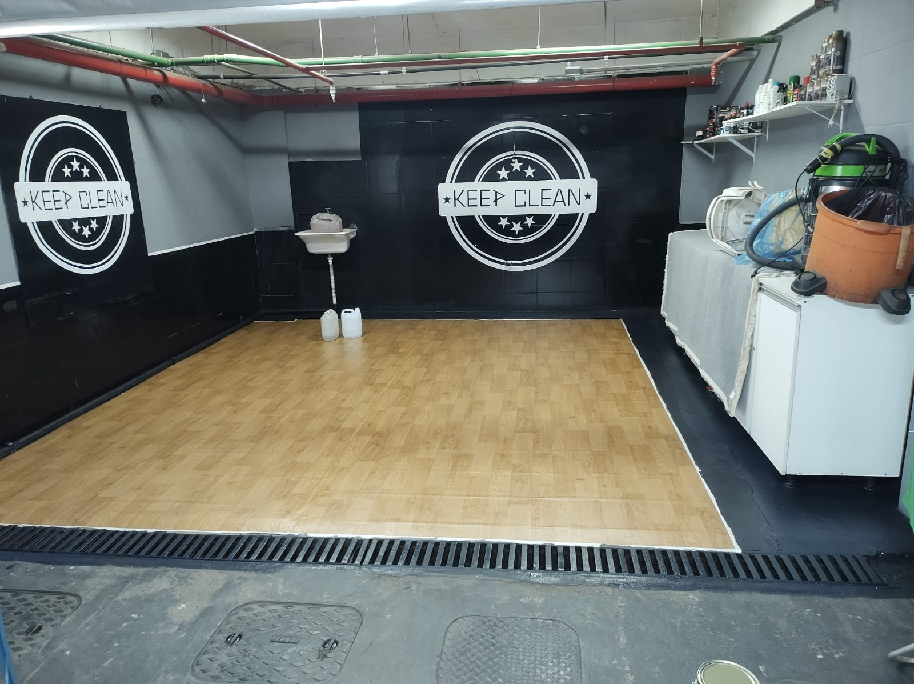
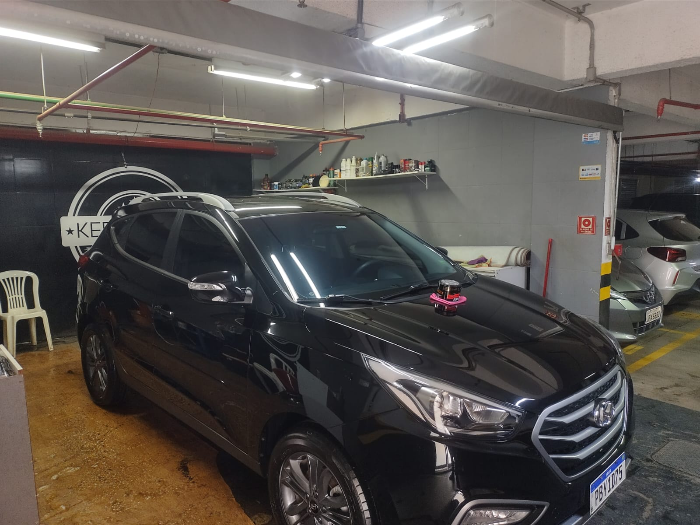
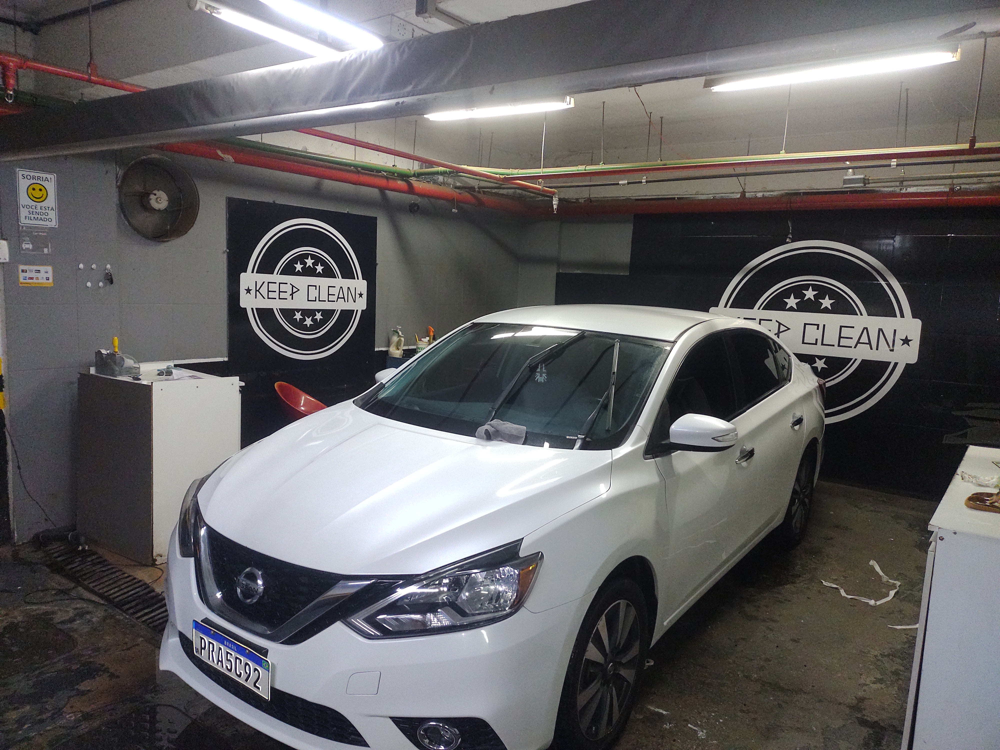
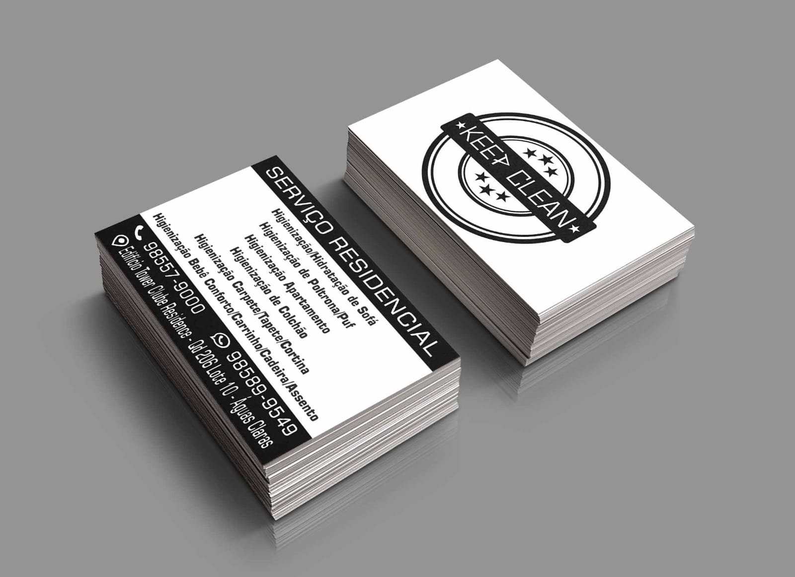

Bem-vindos à Keep Clean
A Keep Clean é uma empresa especializada em limpeza profissional de veículos, localizada no Residencial Tower Club em Águas Claras, Brasília. Nossa missão é proporcionar aos nossos clientes um serviço de excelência, utilizando produtos de alta qualidade e técnicas profissionais para garantir que seu veículo fique impecável.
Com anos de experiência no mercado de estética automotiva, nossa equipe é formada por profissionais qualificados que entendem a importância de cuidar do seu patrimônio com carinho e atenção aos detalhes. Oferecemos uma ampla gama de serviços, desde lavagem simples até tratamentos especializados de enceramento e limpeza detalhada.

Nossa filosofia é baseada na qualidade, agilidade e confiança. Utilizamos apenas produtos biodegradáveis e técnicas que preservam a pintura e os acabamentos do seu veículo, garantindo resultados duradouros e satisfação total dos nossos clientes.
Sobre Nossa Empresa
A Keep Clean nasceu da paixão por automóveis e do desejo de oferecer um serviço diferenciado no mercado de estética automotiva. Nosso espaço foi cuidadosamente projetado para proporcionar o melhor ambiente de trabalho, com equipamentos modernos e produtos de primeira linha.
Nossa Missão
Oferecer serviços de limpeza ecológica de veículos para o público de Brasília e região, com atendimento personalizado e qualidade superior, utilizando a melhor tecnologia do mercado e produtos biodegradáveis que respeitam o meio ambiente.
Nossos Valores
Acreditamos que cada cliente é único e merece um atendimento personalizado. Por isso, trabalhamos com dedicação, transparência e comprometimento, sempre buscando a satisfação total e construindo relacionamentos duradouros baseados na confiança mútua e na excelência dos nossos serviços.
Diferenciais da Keep Clean
Utilizamos tecnologia de ponta, produtos importados de alta qualidade, métodos ecológicos que preservam o meio ambiente, e oferecemos garantia em todos os nossos serviços. Nossa equipe é constantemente treinada para entregar sempre o melhor resultado.
Nossos Serviços Completos
Glass Coating - Vitrificação de Pintura
Nosso serviço premium de vitrificação aplica uma camada de verniz automotivo especial que oferece proteção superior e brilho incomparável. Este tratamento cria uma barreira protetora que resiste a riscos, raios UV e contaminantes, mantendo seu veículo com aparência de novo por muito mais tempo.

Turbo Combo Higienização
Pacote completo que inclui Eco-Lavagem externa, Higienização completa do interior e do Ar Condicionado, limpeza profunda de bancos de estofados, Revitalização de Pintura com espelhamento e Limpeza de Motor a Seco. Ideal para uma renovação completa do seu veículo.

Turbo Combo Hidratação
Serviço especializado para veículos com bancos de couro. Inclui Eco-Lavagem, Higienização de Ar Condicionado, limpeza e hidratação profissional de bancos de couro, Revitalização de Pintura e Limpeza de Motor a Seco. Mantém o couro macio e protegido.
Revitalização de Pintura - Espelhamento
Técnica avançada para restaurar completamente a pintura do seu veículo. Utilizamos produtos premium como 3M, Menzerna e ceras com nanoparticulados para remover micro riscos, oxidação e devolver o brilho original da pintura, criando um efeito espelhado impressionante.
Proteção de Pintura Selante
Aplicação de uma nova camada protetora sobre o verniz original da pintura. Este selante oferece proteção contra intempéries, raios UV, chuva ácida e outros contaminantes, além de facilitar a limpeza futura e manter o brilho por mais tempo.
Reparos nas Partes Metálicas
Serviço completo de lanternagem e pintura para recuperação de partes metálicas danificadas. Nossa equipe especializada utiliza técnicas profissionais e produtos de alta qualidade para restaurar completamente áreas com riscos profundos, amassados ou corrosão.
Serviços Adicionais
Revitalização das Partes Plásticas
Tratamento especializado para restaurar partes plásticas esbranquiçadas e manchadas. Utilizamos produtos importados específicos que devolvem a cor original e protegem contra o ressecamento e desbotamento causados pelo sol e intempéries.
Todos os nossos serviços incluem garantia de qualidade e utilizamos apenas produtos premium importados. Oferecemos pacotes promocionais e descontos para clientes frequentes. Entre em contato conosco para conhecer nossas condições especiais e agendar seu horário.
Nossa Galeria - Antes e Depois
Confira alguns dos nossos trabalhos realizados. Cada veículo recebe atenção especial e cuidado profissional, independentemente do modelo ou condição inicial. Nossos resultados falam por si só.

Limpeza de Estofados, Sofás, Poltronas, Cortinas,Tapetes e Diversos Serviços Residenciais: Transformação completa de Sofá com manchas e sujeira acumulada.
Higienização Completa: Nissan após tratamento completo de higienização e revitalização.
Vitrificação Premium: Range Rover com acabamento de vitrificação e proteção completa.
Identidade Visual: Nossos materiais promocionais e cartões de visita profissionais.
Vídeo Demonstrativo
Assista ao vídeo abaixo para conhecer melhor as técnicas de lavagem profissional e vitrificação que utilizamos em nossos serviços premium:
Este vídeo demonstra as técnicas profissionais de lavagem detalhada, vitrificação e proteção de pintura que aplicamos em todos os nossos serviços premium, garantindo qualidade e cuidado em cada etapa do processo.
Entre em Contato
Estamos localizados no Tower Club Residence, em Águas Claras - DF. Nossa equipe está sempre pronta para atender você com qualidade e profissionalismo. Oferecemos orçamentos gratuitos e condições especiais para clientes frequentes.
Telefone: (61 ) 98557-9000 Email: pedropaulocostadoamaral@gmail.com Endereço:Tower Club Residence, Águas Claras - DF
Horário de Funcionamento: Segunda a Sábado: 08:00 às 20:00 Domingo: Horário Agendado
Formas de Pagamento: Aceitamos dinheiro, cartão de débito, cartão de crédito (até 12x), PIX e transferência bancária. Consulte nossas condições especiais para pagamento à vista.
Ver Todos os Serviços Ligar AgoraMapa